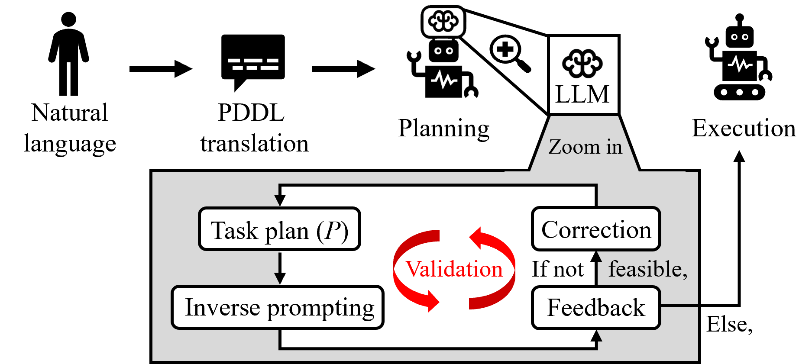
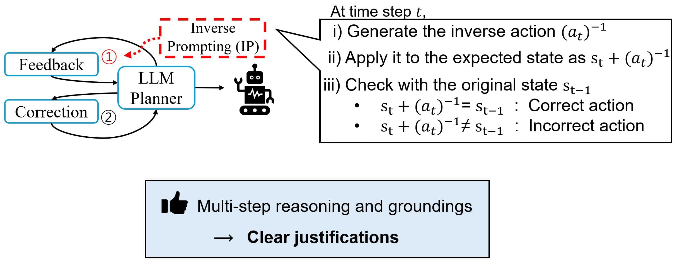

Abstract
In robot task planning, large language models (LLMs) have shown significant promise in generating complex and long-horizon action sequences. However, it is observed that LLMs often produce responses that sound plausible but are not accurate. To address these problems, existing methods typically employ predefined error sets or external knowledge sources, requiring human efforts and computation resources. Recently, self-correction approaches have emerged, where LLM generates and refines plans, identifying errors by itself. Despite their effectiveness, they are more prone to failures in correction due to insufficient reasoning.
In this paper, we introduce InversePrompt, a novel self-corrective task planning approach that leverages inverse prompting to enhance interpretability. Our method incorporates reasoning steps to provide clear, interpretable feedback. It generates inverse actions corresponding to the initially generated actions and verifies whether these inverse actions can restore the system to its original state, explicitly validating the logical coherence of the generated plans.
The results on benchmark datasets show an average 16.3% higher success rate over existing LLM-based task planning methods. Our approach offers clearer justifications for feedback in real-world environments, resulting in more successful task completion than existing self-correction approaches across various scenarios.
Framework

Given a natural language task goal, the method first translates the task into a structured PDDL formulation. The LLM then generates a task plan and verifies its feasibility before execution. The key steps are the following:
- Task formulation. Convert a natural language goal into a structured PDDL planning problem.
- Plan generation. Generate executable action sequences grounded in robot skills.
- Inverse prompting. Verify each step by reasoning backward with inverse actions.
- Feedback-guided re-planning. Refine the plan using detected inconsistencies as explicit feedback.
Proposed Method: InversePrompt

InversePrompt is inspired by mathematical verification, where an operation is validated by reversing it. Given a generated plan, the method produces inverse actions and checks whether the predicted state can be restored to the original state. The discrepancy between the inverted and original states is then used to generate explicit feedback, enabling more reliable self-correction and re-planning.
- Inverse action generation. Generate inverse actions and corresponding inverted states based on the symbolic and linguistic structure of the action language.
- Backward verification. Verify the generated transition by checking whether the inverted state can restore the original state, following the inversion principle in mathematical verification.
- Feedback generation. Compare the inverted and original states to identify inconsistencies and generate detailed feedback for re-planning.
Experiment videos
In the videos, IP denotes InversePrompt.
Blocksworld with Four Blocks
Cooking with Three Pots
Cooking with Four Pots
Poster
BibTeX
@inproceedings{lee2025self,
title = {Self-Corrective Task Planning by Inverse Prompting with Large Language Models},
author = {Lee, Jiho and Lee, Hayun and Kim, Jonghyun and Lee, Kyungjae and Kim, Eunwoo},
booktitle = {2025 IEEE International Conference on Robotics and Automation (ICRA)},
pages = {11017--11023},
year = {2025},
organization = {IEEE}
}